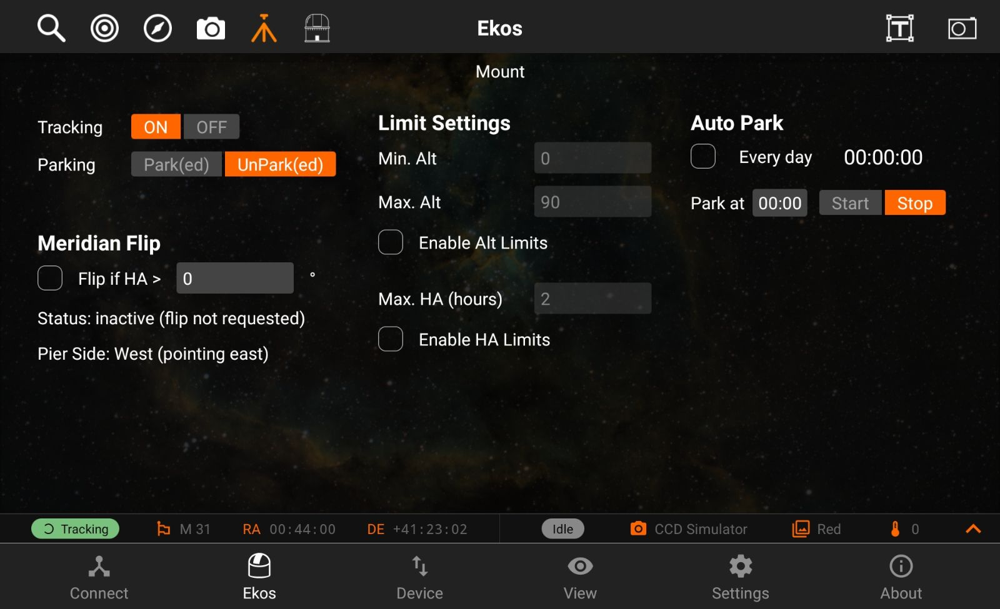
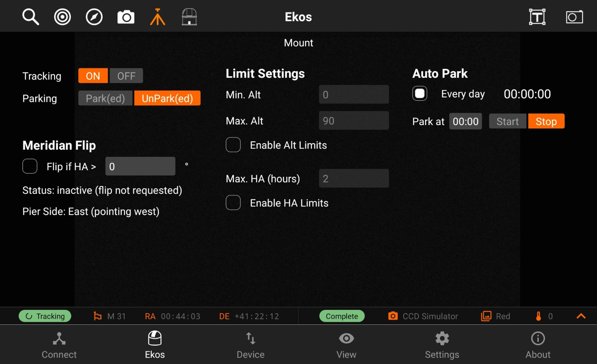
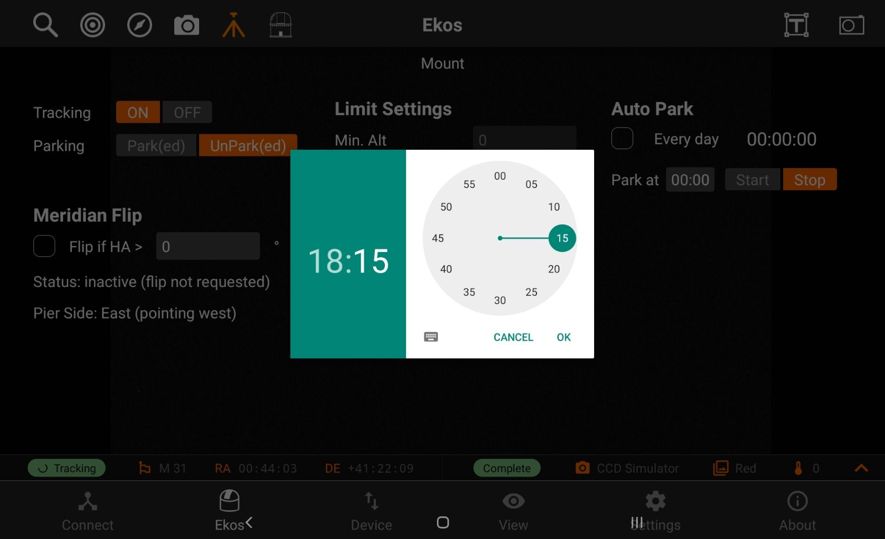
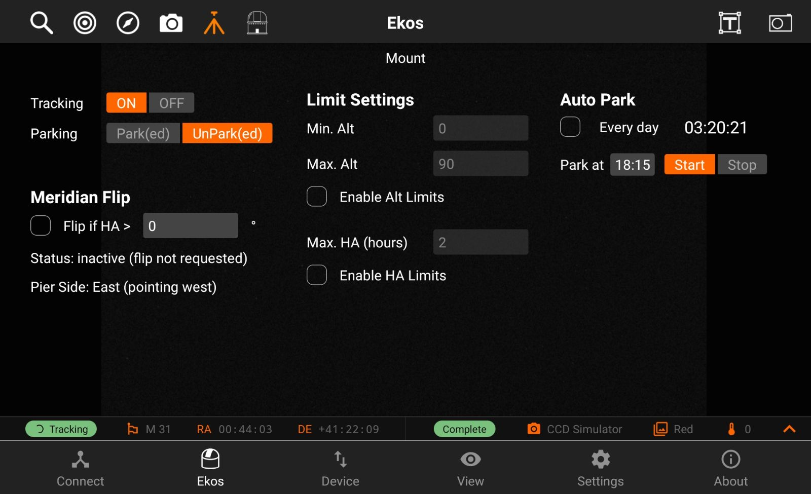

Mount
The Mount module allows you to do Meridian Flips and set limits for your Mount, it has the following features:
- Tracking On/Off
- Mount Park/UnPark
- Meridian Flip
- Flip if HA >: Request a meridian flip if the hour angle exceeds the specified value. Capture and Guiding will be suspended and resumed after the flip is complete.
- Pier Side: Shows the pier side direction.
- Limit Settings: You enable Altitude Limits or Hour Angle Limits if you do not wish your mount to move past a specific limit. The values are expressed in hours. Setting a 1 hour (HA) limit means your mount is restricted to 15 degrees east and west of the meridian. Setting it to 3 HA (3*15) means your mount is free to move 45 degrees east and west of the meridian.
- Auto Park

Meridian Flip
You can do a Meridian Flip from the Mount Module.
Equatorial mounts flip after crossing the meridian in order to prevent the imaging equipment train from hitting the tripod. With Ekos, you can set an hour angle limit which if exceeded, the mount will be commnded to flip. The mount must begin tracking east of the meridian in order to the meridian flip to be commanded in Ekos.
When commanding a meridian flip, Ekos will suspend the autoguiding process and waits until the mount completes the flip. Once the mount begins tracking again post meridian flip, Ekos will plate-solve and make any necessary slew commands to bring the mount to the exact location it was tracking prior to the flip.
Next, it will automatically capture a frame and select a suitable guide star, performs calibration, and resumes autoguiding. If In-Sequence focuing is enabled, it will also capture and focus a suitable star. It then resumes the capture process form where it left.
All these steps are completely automated and require no user intervention!
So just set when you want the meridian flip to occur at the mount module. Remember that the setting is in Hour Angle (HA). 1 HA = 15 degrees, therefore 0.1 HA = 1.5 degrees West of the Meridian.
Always use a positive value to ensure proper meridian flip takes place. Using zero could theoretically work but it is at the very edge where the decision to flip or not is made by the mount, so it's safer to use a slightly higher value like 0.1 HA.
Auto Park
To enable auto park every day, check the Every day box. Otherwise if the desire is only to park it once, keep it disabled.

Select the time you want to park the mount.

To start the countdown timer, press start.
